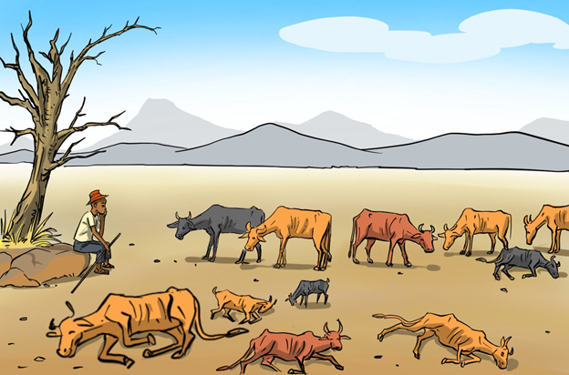

Effects of environmental degradation on the climate
Activity 3
Study Figure 13 and then answer the questions that follow.

1. What do you observe in Figure 13?
2. What do you think caused what you observed in Figure 13?
3. What should be done to prevent it?